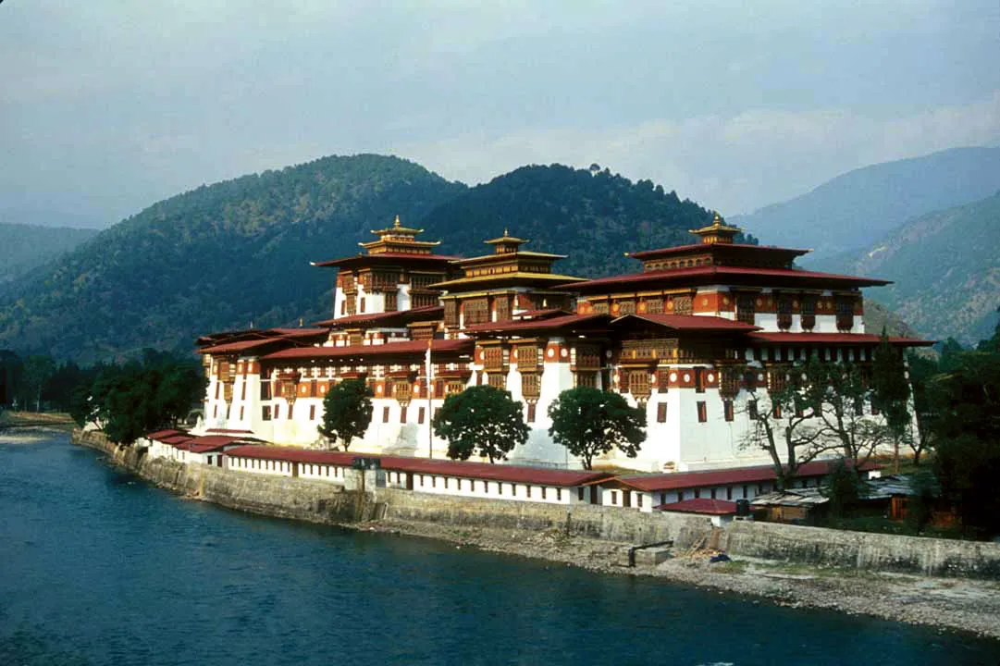

About Punakha Dzong
| Punakha Dzong is one of the most important historical and religious landmarks in Bhutan. It is located in Punakha District, at the confluence of the Pho Chhu (Father River) and Mo Chhu (Mother River).
It was built in 1637 by Zhabdrung Ngawang Namgyal, the unifier of Bhutan. Punakha Dzong was the first capital of Bhutan and served as an important center of government and religion.
The dzong is famous for its beautiful Bhutanese architecture, large white walls, golden roofs, and detailed wooden decorations. A traditional wooden bridge connects visitors to the dzong.
Punakha Dzong is also important because the coronation of Bhutan's first King, Ugyen Wangchuck, took place there in 1907. Today, it remains an important place for Buddhist monks and is a popular tourist attraction.
It represents the history, culture, religion, and beauty of Bhutan.. |
Discription of Punakha
| Punakha Dzong is one of the most famous and beautiful landmarks in Bhutan. It is located in Punakha District, at the meeting point of the Pho Chhu (Father River) and Mo Chhu (Mother River). The beautiful location and traditional architecture make it an important tourist attraction.
The dzong was built in 1637 by Zhabdrung Ngawang Namgyal, who played an important role in unifying Bhutan. It is also known as Pungthang Dewa Chhenbi Phodrang, meaning “The Palace of Great Happiness.”
Punakha Dzong was the former capital of Bhutan and served as an important center for both the government and religion. The first King of Bhutan, Ugyen Wangchuck, was crowned there in 1907. |
External links
|
Internal links
|
Tenzin Rabgyel Tshering
201.00350.17.0004@education.gov.bt
|